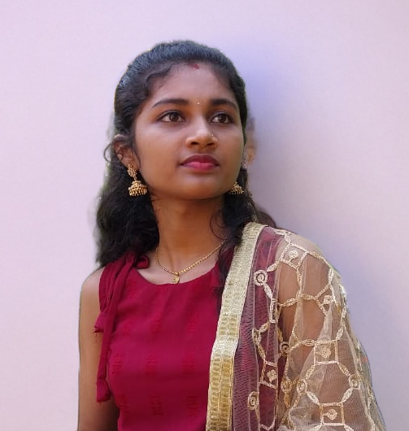

About Me

Designing Is My Passion
I’m a passionate Frontend Developer who loves transforming creative concepts into elegant, interactive, and user-friendly digital experiences. I focus on writing clean, efficient code and building responsive designs that look great on any device.
I enjoy combining creativity with logical problem-solving to craft websites that are both beautiful and functional. My aim is to create seamless interfaces that enhance user engagement while maintaining performance and accessibility.
- Specialty: Frontend Development (React, HTML, CSS, JavaScript)
- Interest: UI/UX Design, Web Animations, and Creative Coding
- Tools & Frameworks: React, Tailwind CSS, Bootstrap, Git, Figma
- Current Focus: Building interactive, responsive web applications and exploring modern frontend libraries
- Location: India